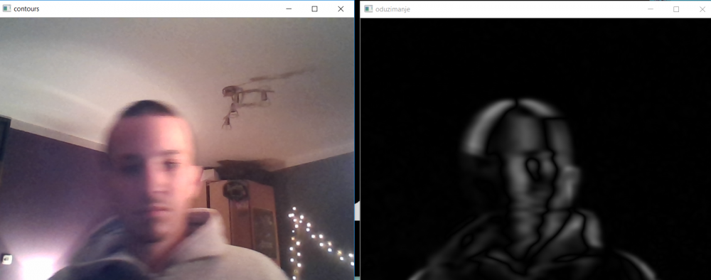

Sigurnosni video sustav za Raspberry Pi
Temu obradili:
- Ivan Penga
- Lucija Matulić
Sadržaj |
Uvod
Zbog mogućih provala i napada na nečije vlasništvo, važno je osigurati sustav koji prati i prepoznaje te javlja kretnje nepoznatih osoba. Zato smo osmislili projekt koji uz pomoć Raspberry Pi-a, njemu pripadajuće kamere te programske implementacije prepoznaje kretnje u određenom prostoru te u trenutku detekcije šalje obavijest vlasniku prostora. Uz to smo dodali detalj da pri detekciji kretnje se pali crvena led lampica.
Korištene tehnologije:
- Raspberry Pi 3b
- Raspberry Pi Camera V2
- Breadboard ploča
- Led lampica
- OpenCV
- Python
- Pushbullet
Rasberry Pi 3b
Rasberry Pi je minijaturno računalo koje je primarno bilo namijenjeno učenju programiranja ali je zbog svoje praktičnosti, jednostavnosti i pristupačne cijene postao korišten u raznovrsne svrhe. Koristi se u mnogobrojnim Internet of things projektima, znanstvenim, istraživačkim i edukativnim svrhama, mnogi ga koriste kao multimedijski centar i slično. O njegovoj popularnosti najviše govori činjenica da je u samo četiri godine svojeg postojanja prodan više od 8 000 000 primjeraka. Rasberry Pi 3b koji smo mi koristili, ima bolje performanse i bolju povezivost od svojih prethodnika. Poput dvojke i trojka dolazi s četerojezgrenim procesorom, s time da se sada oslanja na novije Broadcomovo rješenje koje ima četiri 64-bitne ARM Cortex-A53 jezgre. Novi Pi 3 ima oko 1,5 puta bolje performanse i snažniji čip što ubrzava i poboljšava rad pri korištenju istog. Velika promjena i novost u odnosu na svoje prethodnike a iznimno je važna, jest integracija WiFi modula koju smo isto tako koristili u ovom projektu. Operacijski sustav Raspbian smo instalirali na microSD karticu od 16 GB.
Kako osigurati Raspberry Pi
S obzirom da je Raspberry spojen na Internet, postoje mogući razni napadi na uređaj, odnosno na informacije koje se na njemu nalaze. Pronašli smo nekoliko kvalitetnih savjeta kako se zaštiti od mogućih napada, tj. koje su preventivne mjere.
- 1. Mijenjanje defaultne šifre i korisničkog imena – pri prvom korištenju Raspberry-ja iznimno je važno promijeniti defaultno postavljene informacije. Lozinka se mijenja putem raspi-config aplikacije ili direktno putem komandne linije upisom 'passwd'. Korisničko ime se mijenja tako da se unese dodatni korisnik unosom linije: 'sudo useradd -m NovoKorIme' te se nakon toga može pobrisati defaultno postavljen 'pi' korisnik.
- 2. Postavljanje traženja lozinke svaki put – korištenjem naredbe 'sudo' ispred neke komande znači da izvršavamo radnje kao super korisnik. To znači da napadač ukoliko se domogne informacija o našem Raspberry-ju može mijenjati postavke koristeći navedenu naredbu. Zato postavljamo opciju da se i pri 'sudo' naredbi mora upisati lozinka. To se izvršava naredbom 'sudo nano /etc/sudoers.d/010_pi-nopasswd'
- 3. Instaliranje vatrozida – vatrozid se instalira na jednostavan način (jednostavniji od korištenja iptables) naredbom ' sudo apt-get install ufw'. Ufw znači 'Uncomplicated Fire Wall'
- 4. Instaliranje fial2ban-a – zbog propusta tj. rupa koje se nalaze u vatrozidu, preporuča se instalacija fial2ban-a, skener koji promatra log-ove koji se produciraju na Raspberry-ju i provjerava sumnjive aktivnosti. Instalacija se vrši naredbom 'sudo apt-get install fail2ban'
Korištenje Raspberry Pi-a u sigurnosti
Kao jedna od mnogobrojnih koristi Raspberry Pi-a u svijetu Interneta stvari, tako je i izrada kućne nadzorne kamere jedna od njih. Jedan od zanimljivijih projekata jest Sweet Security gdje se Raspberry Pi koristi za obranu spojenih uređaja. Izgrađen na open source kodu starom 20 goidina koji prati mrežne napade, projekt pokazuje kako je moguće izgraditi snažnu sigurnost za IoT naprave i to sa pristupačnom cijenom. Osim navedenog, postoji mnogo raznovrsnih pothvata u kojem ljudi pretvaraju Raspberry u cjelokupan kućni sugurnosni nadzor. Zbog mogućnosti spajanja kamere, detektiranja pokreta te naravno spajanja na Internet, vlasnici kuće mogu dobiti kompletan pregled svojeg prostora. Pozitivna strana koju mnogi napominju pri ove vrste sigurnosnog nadzora jest da, pri korištenju usluge nekog velikog poduzeća - oni mogu pristupiti našim podacima, dok izradom vlastitog nadzora - sve ostaje u našoj kontroli.
Open CV
OpenCV (Open Source Computer Vision) je programska biblioteka zasnovana na računalnom vidu, području umjetne inteligencije koja se bavi prepoznavanjem različitih oblika na slici i manipuliranjem njenog sadržaja. Jezik je izdan pod BSD dozvolom, tako da je u se u potpunosti može besplatno koristiti. Ovaj sustav koristi JavaCV biblioteku koja sadrži omotače (eng. „wrappers“) za različite biblioteke sa područja računalnog vida, uključujući i OpenCV te sadrži dodatne klase za olakšani rad u Javi ili Androidu („Bytedeco“,2015).
Instalacija OpenCV-a na Raspberry Pi
Prvi korak pri instalaciji Open CV-a na Rapberry je update-anje i upgrade-anje svih paketa:
sudo apt-get update sudo apt-get upgrade
Nakon toga je potrebno instalirati developerski alat CMake, koji pomaže s konfiguriranjem OpenCV-a.
sudo apt-get install build-essential cmake pkg-config
Zatim moramo instalirati pakete koji omogućuju učitavanje različitih formata slikovnih datoteka s diska.
sudo apt-get install libjpeg-dev libtiff5-dev libjasper-dev libpng12-dev
Osim paketa za prepoznavanje formata slike, potrebni su nam oni iza čitanje datoteka video formata.
sudo apt-get install libavcodec-dev libavformat-dev libswscale-dev libv4l-dev sudo apt-get install libxvidcore-dev libx264-dev
OpenCV knjižnica dolazi s podmodulom pod nazivom highgui koji se koristi za prikaz slika na zaslonu i izgradnju osnovnih grafičkih sučelja. Da bismo sastavili modul highgui, moramo instalirati GTK razvojnu knjižnicu:
sudo apt-get install libgtk2.0-dev
Mnoge operacije unutar OpenCV-a (posebice operacija matrice) mogu se dodatno optimizirati instaliranjem nekoliko dodatnih ovisnosti:
sudo apt-get install libatlas-base-dev gfortran
Ove knjižnice za optimizaciju su osobito važne za uređaje ograničenih resursa kao što je Raspberry Pi.
Na kraju, instaliramo Python 2.7 i Python 3 zaglavlja kako bismo mogli sastaviti OpenCV s vezama Python:
sudo apt-get install python2.7-dev python3-dev
Sada kada je sve instalirano, potrebno je dohvatiti paket sa službenog CV repozitorija
cd ~ wget -O opencv.zip https://github.com/Itseez/opencv/archive/3.1.0.zip unzip opencv.zip
Na kraju instaliravamo pip koji je Python manager za pakete.
wget https://bootstrap.pypa.io/get-pip.py sudo python get-pip.py
Potom možemo skinuti biblioteku numpy za Python za rad s mnogim matematičkim izrazima.
pip install numpy
Kada smo poskidali i instalirali sve potrebne pakete i bibilioteke, možemo kompajlitati OpenCV
workon cv
Sada kada radimo u cv virtualnoj okolini, setapiramo pomoću prethodno instaliranom CMake-a
cd ~/opencv-3.1.0/ mkdir build cd build cmake -D CMAKE_BUILD_TYPE=RELEASE \
-D CMAKE_INSTALL_PREFIX=/usr/local \ -D INSTALL_PYTHON_EXAMPLES=ON \ -D OPENCV_EXTRA_MODULES_PATH=~/opencv_contrib-3.1.0/modules \ -D BUILD_EXAMPLES=ON ..
Sada kada je sve gotovo i spremno možemo kompajlirati OpenCV:
make -j4
Pushbullet
Pushbullet je aplikacija koja povezuje više različitih uređaja na način da se obavijesti dobivene na jednom uređaju šalju i svim ostalim definiranim uređajima (koje smo povezali). Mi smo aplikaciju iskoristili kako bi se obavijesti o detekciji pokreta koje je generirao Raspberry Pi poslale na mobilni uređaj.
{kind=link}
Slika 1: Struktura aplikacije
Kada se Python skripta pokrene, potrebne su dvije sekunde kako bi se kamera upalila i postavila u mod skeniranja slike koju vidi. Ako se dogode neki pokreti, odnosno Raspberry detektira kretnje na slici, notifikacija se automatski šalje na mobilni uređaj.
{kind=link}
Slika 2: Postava
Princip rada detektora pokreta
Osnovni princip rada detektora pokreta proizlazi iz oduzimanja vrijednosti svakog piksela slike s prethodno dohvaćenom slikom. Svaka slika predstavljena je u obliku matrice gdje je svaki piksel određen vrijednošću od 0 do 255, s obzirom da je 0 crna boja, 255 bijela a sve između su nijanse sive. Ukoliko su dvije slijedne dohvaćene slike iste, imati će jednake vrijednosti piksela pa će rezultat biti nul matrica (cijela slika će biti crna). No ukoliko su različite na određenom dijelu, vrijednosti piksela više neće biti iste, te će se uduzimanjem vrijednosti dobiti broj veći od 0 tako da će dijelovi slike na kojima se dogodila promjena biti popraćena nijansama sive.
Opis programskog koda
Kao što je već navedeno, cijeli projekt izrađen je u Pythonu, ponajviše zbog jednostavnosti koda i mnogo primjera raznih programskih isječaka. Kako se koristi Raspicam, dohvaćanje video streama kamere je drugačije nego kod standardne web kamere. Potrebno je uključiti biblioteke PiCamera te PiRGBArray te pomoću njih dohvaćati sliku po sliku.
rawCapture = PiRGBArray(camera, size=(640, 480)) for frame in camera.capture_continuous(rawCapture, format="bgr", use_video_port=True): image = frame.array
OpenCv koristi se slikama u formatu “BGR”, pa je u parametrima metode capture_continuous to potrebno i navesti. Sve slike koje se dohvaćaju spremaju se u objekt image te ih sada možemo prosljediti metodama OpenCv-a. Svaka slika predstavljena je matricom pri čemu je svaki piksel također matrica jednog reda i tri stupca, sa vrijednostima od 0 do 255 (svaki element predstavlja udio boje, plave, zelene i crvene respektivno). Za detektor pokreta nije potrebno raditi s bojama pa je najbolje pretvoriti sliku u crno bijelu. Sada će svaki piksel biti predstavljen samo jednim brojem od 0 do 255 gdje je 0 crna boja, 255 bijela, a sva između su nijanse sive. Da se ukloni šum na slici koji može uzrokovati kamera, potrebno je zamutiti sliku.
gray = cv2.cvtColor(image,cv2.COLOR_BGR2GRAY) blur = cv2.GaussianBlur(gray,(21,21),0)
Nakon što smo uklonili potencijalni šum na slici, možemo napraviti apsolutno oduzimanje piksela trenutne slike te prethodno dohvaćene slike metodom absdiff.
absdiff = cv2.absdiff(blur,previous_image) thresh = cv2.threshold(absdiff,10,255,cv2.THRESH_BINARY)[1] dilate = cv2.dilate(thresh,None,iterations=2)
Kako bi se naglasio pokret, potrebno je izvršiti threshold nad rezulatom, odnosno svaki piksel s vrijednošću manjom od 10 postati će crn (0), dok će svaki piksel iznad postati u potpunosti bijel (255). Da dodatno naglasimo pokret, dobra praksa je zadebljati sve bijele površine nad thresholdanom slikom. Navedene operacije nad slikama prikazane su na sljedećim slikama: 
{kind=link}
Slika 3: Apsolutno oduzimanje piksela dvaju slika
{kind=link}
Slika 4: Treshold nad slikom
Nakon što smo dobili željeni rezultat, možemo provjeriti postoje li bijeli obrisi na slici. To se postiže metodom findContours() koja vraća konture u obliku liste vektora pronađene na slici. Sve malene konture smatrati ćemo šumom, dok velike konture sigurno označavaju pokret. Ako se uvjet zadovolji, pokret je detektiran. Oko konture nacrtati će se pravokutnik zelene boje. Sve konture mogu se prikazati na slici pomoću metode drawContours()
cnts = cv2.findContours(dilate.copy(),cv2.RETR_EXTERNAL,cv2.CHAIN_APPROX_SIMPLE)[1]
for c in cnts:
if cv2.contourArea(c) > 500:
(x, y, w, h) = cv2.boundingRect(c)
cv2.rectangle(image, (x, y), (x + w, y + h), (0, 255, 0), 2)
motionDetected = True
{kind=link}
Slika 5: Prikaz kontura na slici
Nakon prikazivanja kontura, potrebno je upaliti crvenu led lampicu koja je spojena na GPIO pin pod brojem 17. Popis svih pinova može se pregledati naredbom gpio readall u terminalu.
Također, potrebno je poslati push notifikaciju na mobitel, te spremiti video od svega 15 slika, na Dropbox.
if motionDetected == True:
GPIO.output(17,True)
imageCount += 1
if imageCount <= 15:
videoOut.write(originalImage)
if imageCount >= 15:
thread.start_new_thread(upload,(randomVideoName,))
thread.start_new_thread(sendMessage,())
randomVideoName = randint(0,999999)
videoOut = cv2.VideoWriter('{0}.avi'.format(randomVideoName),cv2.VideoWriter_fourcc(*'XVID'), 20.0, (640,480))
videoOut je objekt pomoću kojega se izrađuje video u .avi formatu. Svaki video imati će nasumično ime (broj od 0 do 999999) kako ne bi došlo do presnimavanja nekog drugog videa. Dvije navedene dretve pobrinuti će se snimka spremi na Dropbox, odnosno da se pošalje push notifikacija na mobitel, bez da snimka stane na kratko vrijeme.
def sendMessage():
title = "Video Security" body = "Intruder alert! Video file is saved on your Dropbox account."
data_send = {"type": "note", "title": title, "body": body}
ACCESS_TOKEN = '<tu_ide_api_token>' resp = requests.post('https://api.pushbullet.com/v2/pushes', data=json.dumps(data_send),
headers={'Authorization': 'Bearer ' + ACCESS_TOKEN, 'Content-Type': 'application/json'})
if resp.status_code != 200:
raise Exception('Something wrong')
else:
print 'complete sending'
Ova metoda poslati će post zahtjev na web stranicu Pushbulleta, koji, ukoliko dođe do odgovora 200 (“sve je bilo u redu”) na ekran ispisuje poruku “Complete sending”. Acess token jednostavno se može dobiti na prilikom logiranja na web stranicu Pushbulleta te pritiskom na gumb “Generate Access token”. Također je na Android uređaj potrebno instalirati Pushbullet aplikaciju te se logirati pomoću istog računa kao i na web stranicu. Poruka koja se šalje je u JSON formatu s naslovom i tijelom poruke.
{kind=link}
Slika 6: Pushbullet aplikacija
Metoda upload, pobrinuti će se da se izrađen video pospremi na Dropbox račun.
def upload(name):
global uploadVideoObj uploadVideoObj.upload_file('{0}.avi'.format(name))
TransferData klasa za rad s Dropboxom.
import dropbox
class TransferData:
def __init__(self):
self.access_token = <access_token_ide_tu>' self.fileTo = '/Apps/VideoNadzor/' #self.upload_file(fileName,self.fileTo)
def upload_file(self, fileName):
dbx = dropbox.Dropbox(self.access_token)
location = "{0}{1}".format(self.fileTo,fileName)
with open(fileName, 'rb') as f:
dbx.files_upload(f.read(), location)
Isječak koda prikazuje rad s Dropboxom pomoću dropbox biblioteke. Nad dropbox objektom poziva se metoda files_upload(dokument, lokacija) koja uploada datoteku u direktorij na Dropbox računu. Lokacija dokumenta je putanja koja osim imena datoteke uključuje i direktorij na Dropboxu. Access token za Dropbox može se pridobiti odlaskom na url: https://www.dropbox.com/developers/apps/create te kreiranjem direktorija kojem se može pristupiti. Nakon toga, moguće je generirati Access token za dotični direktorij.
Reference
1. Ho, K. (2017.) Camera Alert Application with Raspberry Pi 3, iOS/Android. Preuzeto 23.1.2018. https://raspberrypi.hackster.io/KennyHo2911/camera-alert-application-with-raspberry-pi-3-ios-android-881bb4?ref=tag&ref_id=security&offset=10
2. Klein Keane J. (2017) Take These Steps to Secure Your Raspberry Pi Against Attackers. Preuzeto 23.1.2018. sa https://makezine.com/2017/09/07/secure-your-raspberry-pi-against-attackers/
3.Stackoverflow, Preuzeto 22.1.2018. https://stackoverflow.com/questions/23894221/upload-file-to-my-dropbox-from-python-script
4. Rosebrock, A. (2016.) Accessing the Raspberry Pi Camera with OpenCV and Python. Preuzeto 25.12.2017. sa https://www.pyimagesearch.com/2015/03/30/accessing-the-raspberry-pi-camera-with-opencv-and-python/
5. Rosebrock, A. (2015.) Basic motion detection and tracking with Python and OpenCV. Preuzeto 5.1.2018. sa https://www.pyimagesearch.com/2015/05/25/basic-motion-detection-and-tracking-with-python-and-opencv/
6. Rosebrock, A. (2015.) Install guide: Raspberry Pi 3 + Raspbian Jessie + OpenCV 3. Preuzeto 24.12.2017. sa https://www.pyimagesearch.com/2016/04/18/install-guide-raspberry-pi-3-raspbian-jessie-opencv-3/
7. SimplyPython (bez dat.) Sending aletts to Iphone or Android phone using Python. Preuzeto 22.1.2018. sa https://simply-python.com/tag/pushbullet/
Slike
Slika 1: Struktura aplikacije, Ho, K. (2017.) Camera Alert Application with Raspberry Pi 3, iOS/Android. Preuzeto 23.1.2018. https://raspberrypi.hackster.io/KennyHo2911/camera-alert-application-with-raspberry-pi-3-ios-android-881bb4?ref=tag&ref_id=security&offset=10